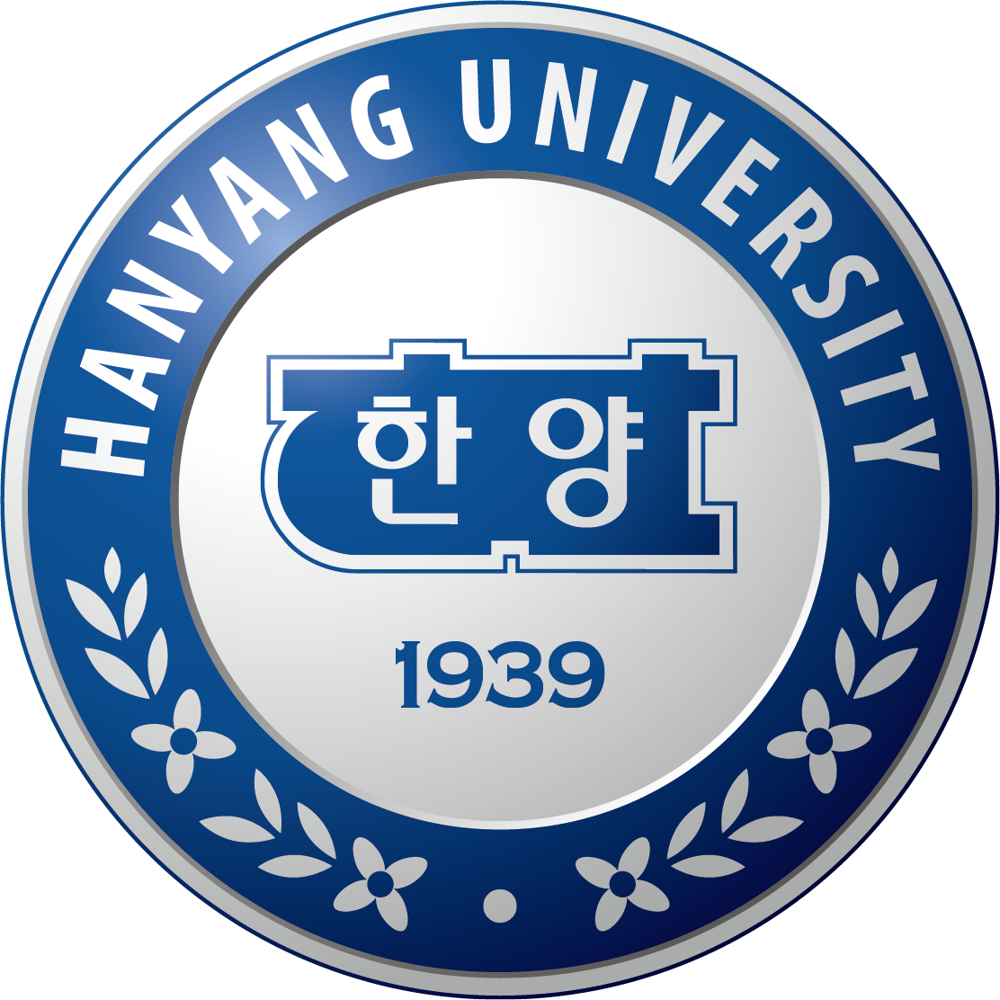

한양대 공과대학 경희대 이과대학
경희대 이과대학
PS:LAB REPORT
손용주 학생을 위한
퍼스널 입시 분석 보고서
"데이터를 기반으로 설계하고, 입학사정관의 시선으로 완성합니다."
CONSULTING OVERVIEW
안녕하세요, PS:LAB입니다.
보성고를 졸업하고 현재 서울대, 고려대, 한양대 등 명문대에서 공부 중인 선배들이 모인 입시 전략 팀입니다. 우리가 직접 겪고 뚫어낸 강남·송파 입시의 정답을 후배들에게 가장 직관적인 '데이터 리포트'로 전달하며, 합리적인 비용으로 최고의 퀄리티를 보장합니다.
고도화된 AI 환경으로 방대한 입시 데이터를 크로스체크합니다.
당장 실행 가능한 디테일만 제공합니다.
명문대 합격생이 직접 작성하는 고퀄리티 리포트.
체계적인 3단계 리포트 솔루션
정밀 데이터 분석
생기부를 입학사정관의 시선에서 냉정하게 평가하여 보완할 수 있는 핵심 키워드를 도출합니다.
스토리보드 기획
목표 대학 인재상에 완벽히 부합하는 방향성을 설정하고 탐구 및 독서 활동을 설계합니다.
실전 리포팅 & 피드백
실제 학교 활동에 바로 적용할 수 있는 디테일한 가이드 리포트를 제공하며 피드백을 진행합니다.
🎓 학생 프로필
- 이름 손용주
- 소속 용남고등학교 3학년 (충남 계룡 · 일반고)
- 진로 건설/환경공학 지망 보건/생명 → 건설/환경 공학
- 출결 질병지각 3회 (미인정 0회) 학종 영향 없음
- 봉사 누계 42시간 3학년 10시간이면 충분
- 내신 1.85등급 수과학 압도적
🎯 전형별 지원 가이드
👨💼 담당 멘토진
공학 입시의 표준, 합격의 메커니즘 · 성균관대 공과대학 합격
일반고 내신 2.9 → 역전의 서사를 로직으로 증명합니다
ACADEMIC DATA ANALYSIS
📈 내신 성적 추이
1.92 → 1.75 → 1.80 → 1.92 (총 내신 1.85). 수과학 내신은 항상 2등급 이내를 고수하며, 특히 2학년 때 물/화/생/지 4과목 모두 1등급을 받은 것은 어느 일반고 수준에서도 압도적인 플러스 요소입니다.
📊 교과 상세 데이터
| 과목 | 1-1 | 1-2 | 2-1 | 2-2 | 3학년 목표 |
|---|---|---|---|---|---|
| 국어 | 2 | 2 | 2 | 4 | 2등급 사수 ⚠ |
| 수학 | 1 | 2 | 2 | 2 | 1등급 금상첨화 (유종의 미) |
| 영어 | 2 | 1 | 2 | 2 | 2등급 유지 |
| 사회 | 1 | 2 | — | — | 이과 이점 확보 |
| 한국사 | 3 | 3 | — | — | — |
| 과학 | 2 | 1 | 1 | 1 | II과목 A 필수 사수 ★ |
STUDENT RECORD EVALUATION
학업 성취도 & 태도
- 수과학 독보적 성취 2학년 물/화/생/지 4과목 전부 1등급 — 일반고에서 보기 드문 공학도로서의 '용기'와 진정성을 증명하는 지표.
- 한국사와 통합 사회에서 보인 탐구 역량 1학년 사회 1등급 및 통합 사회/한국사 탐구 이력은 이과생임에도 인문학적 소양과 교과 충실도를 입증하는 요소.
- 학업 태도 단순 내신 수치를 넘어 가설 설정-변인 통제-실증 결과 도출로 이어지는 집요한 공학자적 기질이 돋보임.
전공 적합성 & 탐구 역량
- 자연스러운 서사 보건·생명 탐구(1학년) → 한옥 건축과 공간 연결 → 블루 어바니즘 스마트시티 구상(2학년)으로 이어지는 서사가 강압 없이 설득력 있음.
- 실증 탐구의 수준 단계별 하중 실험 직접 주도·데이터 입증은 일반고 수준을 뛰어넘는 탐구. 입학사정관이 '진정성'을 느낄 수 있는 핵심 근거.
- 탐구 프로세스 모든 탐구가 '호기심 → 추가 분석 → 과목 연계 → 고찰'의 정석 프로세스를 따름. 신뢰도 측면에서 최상위 평가.
봉사 & 리더십
- 이타적 리더십 학급 반장(1학년), 동아리 기장(알쓸신잡) 등 연속적 리더십 이력. 학우들로부터 칭찬받는 학생으로 선정된 성숙한 인성.
- 실천적 환경보호 분리수거 도우미로서 분리 기준 재확립 및 공유 — 환경공학 지망생의 가치관이 공동체에 투영된 우수 사례.
- 출결 안정성 질병지각 3회는 학상의 명확한 건강 사유로 기록되어 성실성 평가에 전혀 부정적이지 않음.
📋 세특 현황 — 건설/환경 전공 적합성 분석
TARGET UNIVERSITY ROADMAP
| 분류 | 대학 | 전형 | 합격자 평균 | 핵심 전략 & 주의사항 |
|---|---|---|---|---|
| 상향 | 고려대 환경생태공학부 |
학종(고른기회) | 평균 2.1등급 | 계열적합형 면접 비추천. 4합8 최저의 학교추천보다 고른기회 전형 적극 추천. |
| 상향 | 연세대 사회환경시스템공학부 |
학종(기회균형) | 평균 1.9등급 | 2합5 무난한 최저, 수능 후 즉시 면접 대비 필요. 기회균형 카드 적극 추천. |
| 소신 | 한양대 건설환경공학과 |
학종(추천) | 평균 2.1등급 | 한양대가 선호하는 연계식 생기부에 최적화. 면접 없음(서류100). |
| 소신 | 성균관대 건설환경공학부 |
학종(계열/학과) | 평균 2.3등급 | 공학계열은 추합률 높으나 위험성 존재. 건설환경공학부 전공 예약제가 더 적절. |
| 적정 | 중앙대 건설환경플랜트공학과 |
학종(융합형) | 평균 2.3등급 | 탐구형(자사고밭)보다 융합형 추천. 내신/학업역량의 강점이 더 잘 드러남. |
| 적정 | 서울시립대 환경공학부 / 토목공학과 |
학종(면접형) | 평균 2.2등급 | '면접의 늪' 50% 비중. 전공 관련 정성평가 강도가 가장 높으므로 철저한 대비 필수. |
| 적정 | 경희대 사회기반시스템공학과 |
학종(네오) | 평균 2.6등급 | 면접 비중 30~50% 대비. 일반고 수준에서 본인의 진로역량은 충분히 경쟁력 있음. |
| 안정 | 건국대 · 동국대 사회환경공학 / 건설환경 |
학종(면접) | 평균 2.5등급 | 내신으로는 차고 넘치는 카드. 인재상 합치 여부에 따른 면접 준비만 유의. |
| 안정 | 홍익대 건설환경공학과 |
학종(학교생활우수자) | 평균 2.2등급 | 면접 없음, 수능 최저 3합9(혹은 2합5) 사수 시 확실한 안정권. |
📌 학종 전략 메모
6학종을 건국·동국·홍익 이내로 구성한다면, 홍익대 최저(2합5)에 맞춘 수능 공부와 중경시 이하 면접 준비를 병행할 것. 수능 성적으로 수시 카드를 올리려면 1학기 내신 기본기 배양이 우선.
🌾 농어촌/기회균형 카드
충남 계룡 거주 학생은 농어촌 및 기회균형 전형이 '기회의 땅'입니다. 모집 인원이 적어도 경쟁률 폭등 여부만 체크한 뒤 적극 활용할 것을 권장합니다 (6학종 중 2개까지 추천).
3-1 ACTION PLAN
카드를 클릭하면 세부 실행 계획을 확인할 수 있습니다.
GPR 기반 스마트
지하 인프라 안전진단 시스템 설계
2학년 GPR 탐구를 심화하여 실제 도시 지하 구조물 균열 탐지 시스템 제안 보고서 작성
- 물리학 세특 — 파동 심화 탐구보고서
- GPR → 지하철·상수도 인프라 적용
- AI 센서 융합 모니터링 개선 제안 포함
스마트 수처리 시스템과
이온교환수지 정책 제안
2학년 스마트 수처리·킬레이팅 수지 아이디어를 실제 폐수처리 정책과 비교·분석하여 개선안 제시
- 화학 세특 — 이온교환·중화반응 심화 적용
- 국내 폐수처리장 현황 데이터와 비교
- 정책제안서 또는 PPT 발표 형식
도시 열섬 현상 통계 모델링과
쿨루프·쿨페이브먼트 정책 효과 예측
쿨루프 시연 경험을 바탕으로 통계 모델을 적용한 열섬 완화 효과 정량 예측 보고서 작성
- 확통 세특 — 이항분포·정규분포 적용
- 기상청 공공 데이터 활용
스마트 그린 주거 모델
3D 설계 및 에너지 분석
3D 주택 모델링 경험을 발전시켜 태양광·단열·IoT 센서 결합 저에너지 주거 설계안 완성
- 기술·가정 세특 연계 — CAD/모델링 심화
- 에너지 소비량 계산 포함 (물리학 연계)
- 스마트홈 IoT 연결 설계 포함
건설/환경 연계 독서 2권
독서록 작성 & 세특 적용
인프라 및 환경공학과 직접 연결되는 도서를 읽고 공학적 비판 시각을 세특에 녹여내기
- 추천: 『나의 건축가 아버지』『사피엔스가 정복한 행성』
- 독서록 A4 1매, 담당 선생님 제출
- 확통·물리·화학 세특 모두 활용 가능
탐구 과목 집중 관리와
수능 최저 전략 확립
국어+탐구 약점 보완으로 홍익대 최저(2합5) 달성 시 수시 카드 전략이 극적으로 확장됨
- 매주 토요일 수능 실전 시간표 응시
- 탐구 과목(물리·화학) 3학년 개념 완성 우선
- 3월 학평 성적 PS:LAB 공유 필수
생기부 보완 체크리스트
3학년 1학기 필수 실행 항목
MENTOR'S SPECIAL TIP
전동훈
한양대 공과대학 26학번 · 내신 2.1 → 학종 합격"저와 용주 학생의 내신 차이는 불과 0.25등급입니다. 저는 2.25에서 시작해 1.75로 반등하며 한양대 공대에 합격했습니다. 그 차이를 만든 건 오직 '세특의 깊이'였습니다. 수과학 전 1등급이라는 압도적 베이스 위에 '논리적 실증'이 더해지는 순간, 최상위권 대학의 문은 열립니다."
고대현
경희대 이과대학 26학번 · 내신 2.7 → 학종 합격"저는 2.7 평균으로 경희대 학종을 뚫었습니다. 시립대 공간정보공학과 1차 합격 후 면접에서 고배를 마셨던 경험은 지금 용주 학생에게 '면접의 늪'을 조심하라는 가장 강력한 충고가 됩니다. 내신 1.85는 중경시 라인에서 차고 넘칩니다. 이제는 본인의 탐구를 '왜' 했는지 증명할 시간입니다."
손용주 학생에게
손용주 학생은 일반고에서 수과학 전 과목 1등급이라는, 최고 수준의 공과대학이 가장 선호하는 정량적 무기를 보유하고 있습니다. 여기에 1학년의 인문적 통찰과 2학년의 공학적 실증이 조화롭게 어우러져 있습니다.
용주 학생을 위한 전동훈 멘토의 추가 조언
용주 학생은 절대 동등급대 친구들에 비해 생기부가 전반적으로 뒤떨어졌다고 생각 안해도 됩니다. 정석적인 것에서 나아가 추상적이지만은 않은, 본인이 실현하고 구체화한 탐구가 잘 드러나있어요.
또한 3학년 때 틀어서 토목, 건설 쪽을 쓴다면 연세대 사환시, 고대 건사환, 성균관대/한양대 건환공과 같은 곳도 추천하나, 환경 관련해서 쓴다면 고대 환생공, 한양대 자환공과 같은 곳도 괜찮아요. 넓게 보면 환경도 건설계열이라는 것과, 환경만의 학과가 있는 것 둘 다 사실입니다. 환경 연관 학과를 쓰거나 건설환경이라 적힌 과 중 합격하기 좋다고 생각되는 카드를 적극 고려하시길 바랍니다.
고려대·연세대의 고른기회/기회균형 전형은 본인이 가진 '소수의 권리'이며, 이를 적극 활용하되 중경시 라인의 면접 비중을 절대 간과하지 마십시오. 3학년 수학 1등급 사수와 교과 심화 개념 및 인문 역량 연계 — 이것이 합격을 향한 마지막 ACTION입니다.
고려대 고른기회 전형은 충남 계룡이라는 지역이 만들어주는 유일한 기회입니다. 이 카드를 최대한 활용하면서 상위권 공대의 학종 소신 지원과 중경시 라인의 안정을 적절히 안배하는 것이 올해의 최종 목표입니다.
정교한 전략은 불확실한 입시를 확신으로 바꿉니다. 용주 학생의 도전을 응원합니다.